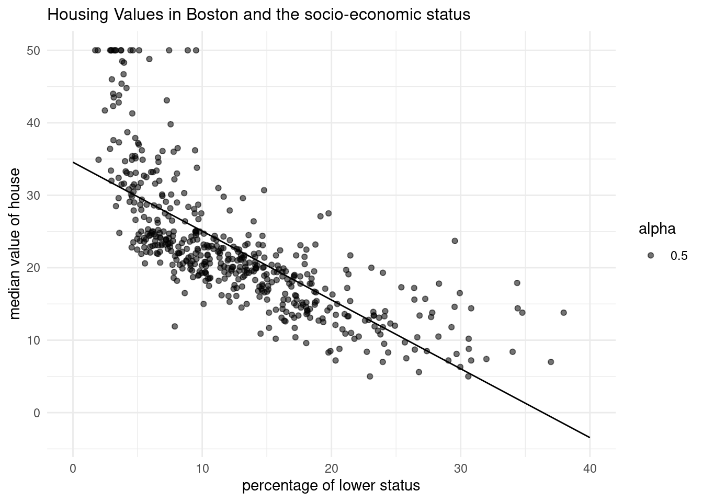
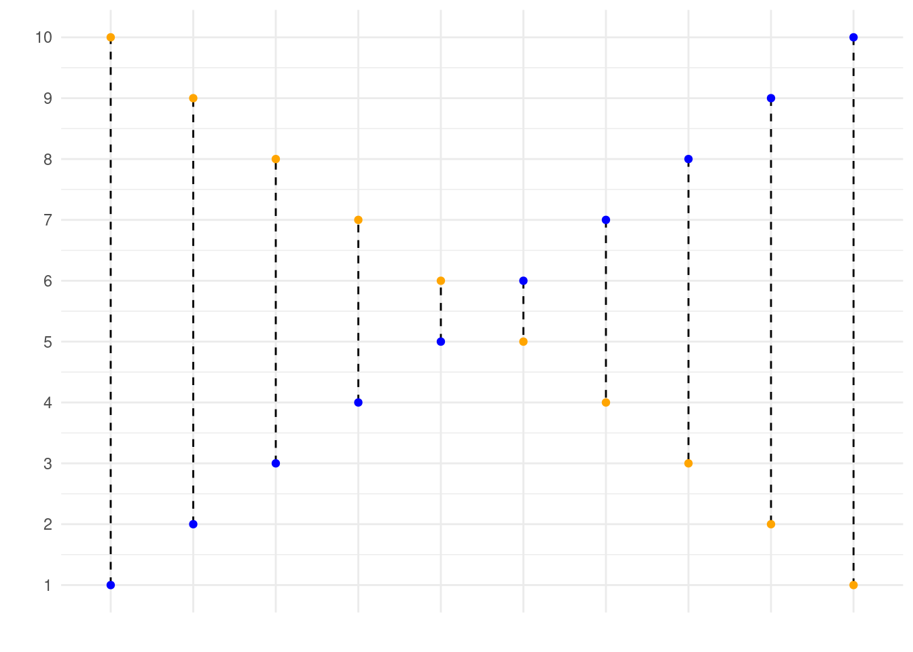

library(ISLR)
library(MASS)
library(tidyverse)
library(dplyr)
library(ggplot2)
library(caret)
library(scales)3 Model accuracy and fit
3.1 Readings
ISLR:
- Chapter 2.2: Assessing Model Accuracy
- Chapter 5.1: Resampling Methods: Cross-Validation
3.2 How do we estimate f?
to estimate training data with statistical learning methods: - parametric: make some assumption about the functional form of f, e .g. \(Price = \beta_0 + \beta_1 * Tweets\)
 - for every increase in one tweet, the bitcoin price will increase by 3,543 - methods: linear regression, with quadratic term, with higher-order-polynomials
- for every increase in one tweet, the bitcoin price will increase by 3,543 - methods: linear regression, with quadratic term, with higher-order-polynomials
- non-parametric: not make an explicit assumptions about the functional form of f, e.g. price of bitcoin is the average of the 3 closest points in our data set

- methods: non-parametric regression (LOESS, \(y_i\) from a “local” regression wihthin a window of its nearest neighbors) or K-NN regression ($y_i predicted from the vale of the closest neighbors)
→ so different models to estimate f, which is the best? How to check if the model does a good job? - which predictors is the best? in more complexe models, vertain parameters have to be “tuned”. Which value for these tuned parameters is the best?
3.2.1 What affects our ability to estimate f?
- irreducible error
- variance of Y
- sample size
- model & task complexity
Example for different \(Var(\epsilon)\), “noise”
The bigger the “noise” the worse the estimate
- use a more restrictive model
- bigger sample size
- include other variables
- use a method, where some variables are hold fixed
Example for sample size
The bigger the sample size, the better the estimate
3.3 Model performance
Example:
- the left is underfitting the data, the right one is more close to the observations
- in practice it is good to know that up to a certain number of tweets, the bitcoin price increase slows down

How can you formalize this, compute the model performance?
3.3.1 Measuring the Quality of Fit
Evaluate the performance of a statistical learning method on a given data set in measuring how well its predictions actually match the observed data.
For Regression: mean squared error (MSE)
The Mean squared error (MSE) represents the error of the estimator or predictive model created based on the given set of observations in the sample. Intuitively, the MSE is used to measure the quality of the model based on the predictions made on the entire training dataset vis-a-vis the true label/output value. In other words, it can be used to represent the cost associated with the predictions or the loss incurred in the predictions. And, the squared loss (difference between true & predicted value) is advantageous because they exaggerate the difference between the true value and the predicted value.
\[ MSE = \frac{1}{n}\sum_{i=1}^{n}(y_i - \hat{f}(x_i))^2, \] If the MSE is smaller, the predicted responses are very close to the true and vice versa.
With the training MSE, computed out of the training data (\(\hat{f}(x_i)\) \(\approx\) \(y_i\)) we are interested in the accuracy of the predictions with the test set (\(\hat{f}(x_0)\) \(\approx\) \(y_0\)) ) → we want to choose the method that gives us the lowest test MSE, not the lowest training MSE, so we compute the average squared prediction error for the test observations:
\[ Ave(y_0-\hat{f}(x_0))^2 \] In some settings, test set is available → sample is split in train and test set What, when no test set available? The learning method is chosen that minimizes the training MSE.
Degrees of freedom: A quantity, that summarizes the flexibility of a curve → the more restricted an estimate is, e. g. an estimate computed with regression, the less degrees of freedom the curve has.
Problem of overfitting with taking the training MSE for test MSE
As model flexibility increases, training MSE will decrease, but the test MSE may not. When a given method yields a small training MSE but a large test MSE, we are said to be overfitting the data. This happens because our statistical learning procedure is working too hard to find patterns in the training data, and may be picking up some patterns that are just caused by random chance rather than by true properties of the unknown function f. When we overfit the training data, the test MSE will be very large because the supposed patterns that the method found in the training data simply don’t exist in the test data.
→ traing MSE is smaller than test MSE. Especially when a less flexible model would have yielded a smaller test MSE.

3.3.1.1 Other measures of the model accury besides the MSE
- Root mean squared error (RMSE): \[ \sqrt{MSE} \]
Mean absolute error (MAE): \[ MAE= \frac{1}{n} \sum_{i=1}^{n} |y - \hat{y})^2 \]
Median absolute error (mAE): \[ mAE = median |y - \hat{y})^2 \]
r-Squared: Proportion of variance explained (R2): R2=correlation(y,y^)2
\[ R^2 = correlation (y, \hat{y})^2 \] \[ R^2 = \frac{\sum (\hat{y}_i - \overline{y})^2} {\sum y_i - \overline{y})^2} \] \[ R^2 = 1- \frac{MSE}{Var(y)} \] R-Squared is the ratio of the sum of squares regression (SSR) and the sum of squares total (SST). Sum of Squares Regression (SSR) represents the total variation of all the predicted values found on the regression line or plane from the mean value of all the values of response variables. The sum of squares total (SST) represents the total variation of actual values from the mean value of all the values of response variables. R-squared value is used to measure the goodness of fit or best-fit line. The greater the value of R-Squared, the better is the regression model as most of the variation of actual values from the mean value get explained by the regression model. However, we need to take caution while relying on R-squared to assess the performance of the regression model. This is where the adjusted R-squared concept comes into the picture. This would be discussed in one of the later posts. R-Squared is also termed as the coefficient of determination. For the training dataset, the value of R-squared is bounded between 0 and 1, but it can become negative for the test dataset if the SSE is greater than SST. Greater the value of R-squared would also mean a smaller value of MSE. If the value of R-Squared becomes 1 (ideal world scenario), the model fits the data perfectly with a corresponding MSE = 0. As the value of R-squared increases and become close to 1, the value of MSE becomes close to 0.
R-Squared is also termed the standardized version of MSE. R-squared represents the fraction of variance of the actual value of the response variable captured by the regression model rather than the MSE which captures the residual error.
In this class focus on MSE, with that we can compute our decision and intuition:
Example: Which one is better?
The left method is overfitting the data and fit to the noise, difficult to interprete.
We want to find a model, that is in the middle, that is “just right”:
So we should not care too much about the MSE, because we already know this observations, we want to understand new data, predict what will happen and generalize.
3.3.2 Bias-Variance Trade Off
expected test MSE can be decomposed into the sum of three fundamental quantities: variance of \(\hat{f}(x_0)\) , squared bias of \(\hat{f}(x_0)\) and variance of the error term \(\epsilon\).
The expected test MSE at \(x_0\) is:
\[ E(y_o -\hat{f}(x_0))^2 = Var(\hat{f}(x_0)) + Bias([\hat{f}(x_0))]^2 + Var(\epsilon) \]
\[ E(MSE) = E(\frac{1}{2} \sum_{i=1}^{n} (y - \hat{y})^2) \\ = E(\frac{1}{2} \sum_{i=1}^{n} ( outcome_i - predicted_i)^2) \\ = Bias^2(model) + Variance(model) Variance(\epsilon) \]
The expected test MSE refers to Ave, that we would obtain if repeatedly estimated \(f\) using a large number of training sets, and tested each at \(x_0\). Overall expected test MSE can be computed by averaging \(E(y_o -\hat{f}(x_0))^2\) over all possible values of \(x_0\) in the test set. → for getting a small test MSE, we need a method that simultaneously achieves low variance and low bias (because both is squared it can not be negative). Furthermore expected test MSE can never be lower than \(Var(\epsilon)\), the irreducible error.
Variance: refers to the amount by which \(\hat{f}\) would change if we estimated it using a different training data set. → more flexible models have higher variance, because it is more volatile. It adapts more to specific to the observations. Variance refers the sensitiviy of our model to small fluctuations in the training dataset. Since the training data are used to fit the statistical learning method, different training data sets will result in a different \(\hat{f}\) . High variance often comes from overfitting.
Bias: refers to the error that is introduced by approximating a real-life problem, which may be extremely complicated, by a much simpler model. In reality not only X influences Y, there are many other variables and linear relationships are unlikely.
Variance\((\epsilon)\): Irreducible error
Consequently, the U-shape is result of 2 competing properties: Bias and Variance. If you choose a more flexible method, the Variance will increase but the bias will decrease and vice versa for a more restrictive model. So you need the ideal degree of flexibility, that your test MSE stays small. → that is the bias-variance trade off
MSE is influenced by both bias and variance: Model with high bias: Model that is not able to capture the complexity of the phenomena Model with high variance: Model that easily overfits accidental patterns
in general more flexible models will fit the training data more closely, but they have the problem of overfitting → in the test set you can see the flexible model is printing the noise to and so have at a certain degree higher MSE with increasing flexibility.
Complexity: Possible definitions of complexity:
Amount of information in data absorbed into model; Amount of compression performed on data by model; Number of effective parameters, relative to effective degrees of freedom in data. For example: More predictors, more complexity; Higher-order polynomial, more complexity
Model complexity vs. interpretability:
3.3.3 The classification setting
In this setting, \(y_i\) is not metric and the regression logic is not applicable. Most common approach for quantifying the accuracy of estimate \(\hat{f}\) is the training error rate, the proportion of mistakes that are made if we apply our estimate \(\hat{f}\) to the training observations:
\[ \frac{1}{n}\sum_{i=1}^{n} I(y_i \neq\hat{y_i}). \]
\(\hat{y_i}\) is class label for the ith observation using \(\hat{f}\). \(I(y_i \neq\hat{y_i})\) is indicator variable that equals 1 if \(y_i \neq\hat{y_i}\) and 0 if \(y_i = \hat{y_i}\). If \(I(y_i \neq\hat{y_i} = 0)\) than the ith observation was classified correctly, otherwise it is misclassified.
We are interested in the test error rate: \[ AveI(y_0 \neq\hat{y_0}) \] → the smaller the test error, the better the classifier.
The Bayes Classifier
It is possible to show that the test error rate is minimized, on average, by a very simple classifier that assigns each observation to the most likely class, given its predictor values:
\[ Pr(Y = j | X= x_0) \]
conditional probability, is the probability that \(Y=j\) given the observed predictor vector \(x_0\).
If there are only two categories (binary) the Bayes classifier predict one class if \(Pr(Y = j | X= x_0) > 0.5\) and for class two otherwise.
Example with simulated data, like we have the test set available:

Purple line: here is the probability exactly 50 % → Bayes decision boundary, it is the boundary, from which both observations are assigned to the groups.
The Bayes classifier produces the lowest possible test error rate, called the Bayes error rate, the classifier will always choose the class for which the probability is the largest, so:
\[ 1- E( max_j Pr(y=j |X)) \] for all possible X.
K-Nearest Neighbors
In theory we would always like to predict qualitative responses using the Bayes classifier. But for real data, we do not know the conditional distribution of Y given X, and so computing the Bayes classifier is impossible. Therefore, the Bayes classifier serves as an unattainable gold standard against which to compare other methods.
K-Nearest Neighbors (KNN) classifier estimate the conditional distribution of Y given X and then classify a given observation to the class with highest estimated probability.
Given a positive integer K and a test observation \(x_0\), the KNN classifier first identifies the K points in the training data that are closest to \(x_0\), represented by \(N_0\).Then it estimates the conditional probability for class j as the fraction of points in \(N_0\), whose response values equal j:
\[ Pr(Y=j | X= x_0) = \frac{1}{K} \sum_{i \in N_0} I(y_i=j) \] Finally, test observation \(x_0\) to the class with the largest probability like the Bayes classifier.

The choice of K has a drastic effect on the KNN classifier obtained. Figure 2.16 displays two KNN fits to the simulated data from Figure 2.13, using K = 1 and K = 100. When K = 1, the decision boundary is overly flexible and finds patterns in the data that don’t correspond to the Bayes decision boundary. This corresponds to a classifier that has low bias but very high variance. As K grows, the method becomes less flexible and produces a decision boundary that is close to linear. This corresponds to a low-variance but high-bias classifier.

Just as in the regression setting, there is not a strong relationship between the training error rate and the test error rate. → As in the regression setting, the training error rate consistently declines as the flexibility increases. However, the test error exhibits a characteristic U-shape, declining at first (with a minimum at approximately K = 10) before increasing again when the method becomes excessively flexible and overfits.
3.4 How to estimate the generalization error E(MSE) reliably? Training and test set
Why do we want to predict on unseen data? Conceptually: We often want to understand/predict a general phenomena, not just the observations we already have Pragmatically: It allows to understand if our model is overfitting the data. Idea = you can’t overfit data if you don’t see that data.
Try the function with a new data set. Best practice: Use new data from a later time point. In practice it is really difficult to get data from the future, if you would like predict something, so, we hace to use new observations from the intended prediction situation. Often you only have one dataset, which we split in 2.
Datasets:
- Training: train the model
- observations used to fit \(\hat{f}(x)\)
- Validation: compare between models, tune models, selscz features
- new observations from the same source as training data (used several times to select model complexity)
- test: assess E(MSE) of the final model
- New observations from the intended prediction situation (to evaluate E(MSE) for your final model) –> Only used once in our final model!
Steps:
- you will have overfitting only using the training data set
- using the training data set to train different models
- using the validation set to select the best model
- using the test data set to evluate the accuracy of the model (you can not use the validation set, because it is biased. With the validation data set you have selected the best model, so if you would test it with that, too, it is biased)
- computed MSE of the test data set to come to the true MSE, the E(MSE) to show, if the model is reliably
- using the MSE of our models in a new data set, we can see which model is really the best and now we can see that the left one is not the best one, because of overfitting it is not that good fitting to new data → to volatile to the obervations and has been fitted to the noise
When comparing the models, you can see, which model is the best: (in real world we do not have the actual distribution of observations, we estimate them)
- we can see that the quadratic regression is the best, the KNN regression is overfitting the data.
Example in practice, if we have one dataset:
- Shuffle the observations
- Divide into training (85%) and testing (15%)
- Training –> Divide into training (70%) and validation (15%)
- Tune models, evaluating models using MSE on the validation set
- Select the best model
- Use the training + validation set to retrain the final model
- Evaluate the model using the test data
Problem of bias, because you compare samples, in which the actual worse model fits better with the other samples
- The validation estimate of the test error can be highly variable
- Only a subset of the observations are used to fit the model.
- This suggests that the validation set error may tend to overestimate the test error for the model fit on the entire data set.
- if performance on validation and performance on test set, start over again
3.4.1 How to split the datasets
Training: Bulk of observations (~50-80%)
Validation and testing: Smaller subsets (~10-20%) –> Should be representative in order to estimate E(MSE) accurately.
e.g. without cross-validation
- Training: 50-70%
- Validation: 15-25%
- Test: 15-25%
e.g. with cross-validation
- Training: 70-80% + 5-10 fold cross-validation to separate into training/validation
- Test: 20-30%
3.4.2 considerations with the test dataest und cross validation
The idea is that the \(MSE_{test}\) is a good estimate of the \(E(MSE)\) (prediction / Bayes error) → This is only true if the test data is similar to the prediction data!
- sometimes a wrong model is better than a true model, on average better → selecting a simpler model can be better, if you want to show relationships, because world is too complex
- these factors together determine what works best:
- how close the function form of \(\hat{f}(x)\) is to the true \(f(x)\).
- the amount of irreducible variance \((\omega^2)\)
- the sample size (n)
- the complexity of model (p/df or equivalent)
3.4.3 Two alternatives of model selection:
- Comparing statistical methods (e.g. linear regression vs knn regression)
- Comparing models with different predictors included (e.g. linear regression - including predictors [X1, X2] vs [X1, X2, X3] )
- Comparing two models with different hyperparameters (e.g. KNN regression using - the closest 3 vs 10 neighbors)
3.5 Resampling Methods: Cross-Validation
- Methods for estimating test error rates and thereby choosing the optimal level of flexibility for a given statistical learning method.
- involve repeatedly drawing samples from a training set and refitting a model of interest on each sample in order to obtain additional information about the fitted model.
- cross-validation can be used to estimate the test error associated with a given statistical learning method in order to evaluate its performance, or to select the appropriate level of flexibility
- evaluating model´s perfomance known as model assessment, process of selcting the proper level of flexibility is known as model selection.
- basic mechanism: a class of methods that estimate the test error rate by holding out a subset of the training observations from the fitting process, and then applying the statistical learning method to those held out observations
The following explanations are first made for regression and afterwards for classification
3.5.1 The Validation Set Approach
Randomly dividing the available set of observations into a model is fit on the training set, and the fitted model is used to predict the responses for the observations in the validation set. → resulting validation set error rate—typically assessed using MSE in the case of a quantitative response—provides an estimate of the test error rate.
This is not only done once, it is done multiple times and tested than.
Problem: The results are not that clear, how much polynominals would produce the lowest MSE. In the Figure each training data produces another degree of polynominal → only thing that can be stated for sure is that a linear fit is not adequate. → very variable → too few observations, overestimate the test error rate

3.5.2 Leave-One-Out Cross Validation (LOOCV)
Only a single observation is used for validation. The statistical learning method is fit on the \(n - 1\) training observations, and a prediction \(\hat{y_1}\) is made for the excluded observation, using its value \(x_1\).
Because \((x_1, y_1)\) was not used in the fitting process, \(MSE_1 = (y_1-\hat{y_1})^2\) is approximately unbiased estimate for the test error. → because only one observation is highly variable as a check up, same procedure by selecting \((x_2, y_2)\) and so on. Tge LOOOCV estimate for the ttest MSE is the average of these \(n\) test error estimates:
\[ CV_(n) = \frac{1}{n} \sum_{i=1}^{n} MSE_i \]
advantages:
- far less biased, because only one observation is included in each run → not to overestimate the test error rate
- running LOOCV multiple times always yields the same results → no randomness in the splits

LOOCV has the potential to be expensive to implement, since the model has to be fit \(n\) times → shortcut:
\[ CV_(n) = \frac{1}{n} \sum_{i=1}^{n} (\frac{y_i -\hat{y_i}} {1-h_i})^2 \]
3.5.2.1 high leverage points
Leverage is the influence, that one point has on the regression line, if the point is left out. How huge the leverage of a point is, depends on how far away the observation from other observations is. This is not depend on how much an observation can explain the residual sum of sqares (RSS). It can be, that a point is high in leverage but only explain a little part of RSS and vice versa. Points with a high leverage called high-leverage points. Data points at the edge are more likely to have high leverage than the points in the center.
\(h_i\) is the leverage (In statistics and in particular in regression analysis, leverage is a measure of how far away the independent variable values of an observation are from those of the other observations. High-leverage points, if any, are outliers with respect to the independent variables):
\[ h_i = \frac{1}{n} + \frac{(x_i - \overline{x})^2} {\sum_{i´=1}^{n} (xi´-\overline{x})^2} \]
Like ordinary MSE, exept the ith residual is devided by \(1-h_i\). Leverage lies between 1/n and 1. Selects the amount that an observation influences its own fit. Hold not in general, in which case the model has to be refit n times.
3.5.3 k-Fold Cross-Validation
Divided sets of observations into k groups /folds of approximately equal size First fold is validation set, method is fit on the remaing k-1 folds \(MSE_1\) is then computed on the held-out fold → procedure is repeated -times, each time, with a different group of observations is validation set. k-fold CV estimate:
\[ CV_(k) = \frac{1}{k} \sum_{i=1}^{k} MSE_i \] Consequently, LOOCV as a special case of the k-fold CV in which k is set to equal n. In practice, k-folds CV often performs using k=5 or k=10. Advantage: LOOCV requires fitting the statistical learning method n times. This has the potential to be computationally expensive → then only 5 or 10 times the learning procedure is fitted, more feasible.
- only split in training and test data set
- ‘Cross validation’ often used to replace single dev set approach;
- Instead of dividing one time the training dataset (into train/dev), do it many times.
- Perform the train/dev split several times, and average the result.
- Usually K = 5 or K = 10.
- When K = N, ‘leave-one-out’;
In all three plots, the two cross-validation estimates are very similar.
Model assessment: When we perform cross-validation, our goal might be to determine how well a given statistical learning procedure can be expected to perform on independent data; in this case, the actual estimate of the test MSE is of interest.
Model selection: But at other times we are interested only in the location of the minimum point in the estimated test MSE curve. This is because we might be performing cross-validation on a number of statistical learning methods, or on a single method using different levels of flexibility, in order to identify the method that results in the lowest test error. For this purpose, the location of the minimum point in the estimated test MSE curve is important, but the actual value of the estimated test MSE is not. We find in Figure 5.6 that despite the fact that they sometimes underestimate the true test MSE, all of the CV curves come close to identifying the correct level of flexibility—that is, the flexibility level corresponding to the smallest test MSE.
3.5.3.1 Bias-Variance Trade-Off for k-Fold Cross-Validations
k-fold CV has computational advantage to LOOCV and often gives more accurate estimates of test error rate → because of bias-variance trade-off:
- LOOCV has less bias, because almost all observations are used in the training sets every time. k-fold CV in comparison more biased, because each training set exclude more observations.
- LOOCV has higher variance than k-fold CV. In LOOCV averaging the outputs of n fitted models, each of which is trained on an almost identical set of obesrvations → correlation between them is high. Have higher variance, so the test error estimate tends to have higher variance. k-Fold CV with k < n less correlation,overlap bewtween training sets is smaller.
- To summarize, there is a bias-variance trade-off associated with the choice of k in k-fold cross-validation. Typically, given these considerations, one performs k-fold cross-validation using k = 5 or k = 10, as these values have been shown empirically to yield test error rate estimates that suffer neither from excessively high bias nor from very high variance.
3.6 in R
Training, Validation, Test:
library(caret)
# define the training partition
train_index <- createDataPartition(Boston$medv, p = .7,
list = FALSE,
times = 1)
# split the data using the training partition to obtain training data
boston_train <- Boston[train_index,]
# remainder of the split is the validation and test data (still) combined
boston_val_and_test <- Boston[-train_index,]
# split the remaining 30% of the data in a validation and test set
val_index <- createDataPartition(boston_val_and_test$medv, p = .6,
list = FALSE,
times = 1)
boston_valid <- boston_val_and_test[val_index,]
boston_test <- boston_val_and_test[-val_index,]
# Outcome of this section is that the data (100%) is split into:
# training (~70%)
# validation (~20%)
# test (~10%)
# Note that creating the partitions using the `y` argument (letting the function know what your dependent variable will be in the analysis), makes sure that when your dependent variable is a factor, the random sampling occurs within each class and should preserve the overall class distribution of the data.
#Then train the model 1 only with the train data
model_1 <- lm(medv ~ lstat, data = boston_train)
summary(model_1)
# Train model 2 only with train data
model_2 <- lm(medv ~ lstat + age + tax, data = boston_train)
summary(model_2)
#MSE for trained models only show, how well the model perform on the trained data set! For evaluating which model you should choose, validation data set
# MSE function for evaluation of accuracy
mse <- function(y_true, y_pred) {
mean((y_true - y_pred)^2)
}
# Calculate the MSE for validation
model_1_mse_valid <- mse(y_true = boston_valid$medv,
y_pred = predict(object = model_1, newdata = boston_valid))
model_2_mse_valid <- mse(y_true = boston_valid$medv,
y_pred = predict(model_2, newdata = boston_valid))
# Choose your model (in this case model 2) based on the lower value of validation MSE, because you want the better out-of-sample prediction
# estimate accuracy of your selected model
#first: train your model again using this time train and validation data
model_2b <- lm(medv ~ lstat + age + tax, data = bind_rows(boston_train, boston_valid))
summary(model_2b)
#second: predict on the test data:
model_2_mse_test <- mse(y_true = boston_test$medv,
y_pred = predict(model_2b, newdata = boston_test))
#inspect the MSE
model_2_mse_test
#compute the R(MSE)
Another quantity that we calculate is the Root Mean Squared Error (RMSE). It is just the square root of the mean square error. That is probably the most easily interpreted statistic, since it has the same units as the quantity plotted on the vertical axis.
Key point: The RMSE is thus the distance, on average, of a data point from the fitted line, measured along a vertical line.
# The estimate for the expected amount of error when predicting the median value of a not previously seen town in Boston when using this model is:
sqrt(model_2_mse_test)cross-validation
# Just for reference, here is the mse() function once more
mse <- function(y_true, y_pred) mean((y_true - y_pred)^2)
cv_lm <- function(formula, dataset, k) {
# We can do some error checking before starting the function
stopifnot(is_formula(formula)) # formula must be a formula
stopifnot(is.data.frame(dataset)) # dataset must be data frame
stopifnot(is.integer(as.integer(k))) # k must be convertible to int
# first, add a selection column to the dataset as before
n_samples <- nrow(dataset)
select_vec <- rep(1:k, length.out = n_samples)
data_split <- dataset %>% mutate(folds = sample(select_vec))
# initialise an output vector of k mse values, which we
# will fill by using a _for loop_ going over each fold
mses <- rep(0, k)
# start the for loop
for (i in 1:k) {
# split the data in train and validation set
data_train <- data_split %>% filter(folds != i)
data_valid <- data_split %>% filter(folds == i)
# calculate the model on this data
model_i <- lm(formula = formula, data = data_train)
# Extract the y column name from the formula
y_column_name <- as.character(formula)[2]
# calculate the mean square error and assign it to mses
mses[i] <- mse(y_true = data_valid[[y_column_name]],
y_pred = predict(model_i, newdata = data_valid))
}
# now we have a vector of k mse values. All we need is to
# return the mean mse!
mean(mses)
}
# use the formula to perfom a cross-validation for the model
cv_lm(formula = medv ~ lstat + age + tax, dataset = Boston, k = 9)
# the output is the test MSE 3.6.1 Cross-Validation on Classification Problems
LOOCV error rate and analogously to that the k-fold CV and validation set error rates:
\[ CV_(n) = \frac{1}{n} \sum_{i_1}^{n} Err_i \] \[ Err_i = I(y_i \neq \hat{y_i}) \]
logistic regression has not enough flexibility often, therefore an extension is needed → using a polynomial functions of the predictors, e. g. an quadratic logistic regression model with 2 degrees of freedom:
\[ log( \frac{p}{1-p}) = \beta_0 + \beta_1 X_1 + \beta_2 X1^2 + \beta_3 X_2 + \beta_4X_2^2 \]
In practice, for real data, the Bayes decision boundary and the test error rates are unknown → cross-validation
→ the 10-fold CS error rate provides a pretty good approximation to the test error rate
→ 10-fold CV error indicates the best value for K, training error rate declies as the method becomes more flexible, so cannot be used to select the optimal value for K.
3.6.2 Practice
In this lab, you will learn how to plot a linear regression with confidence and prediction intervals, and various tools to assess model fit: calculating the MSE, making train-test splits, and writing a function for cross validation. You can download the student zip including all needed files for practical 3 here.
We will use the Boston dataset, which is in the MASS package that comes with R. In addition, we will make use of the caret package in Part 2 to divide the Boston dataset into a training, test, and validation set.
- Inspect the Boston dataset using the
View()function
view(Boston)
?BostonThe Boston dataset contains the housing values and other information about Boston suburbs. We will use the dataset to predict housing value (the variable medv, here the outcome/dependent variable) by socio-economic status (the variable lstat, here the predictor / independent variable).
medv → Y - median value of owner occupied homes in $1000 steps - metric variable lstat → X - lower status of popultation - in percent, metric variable
sample size → 506 rows
Let’s explore socio-economic status and housing value in the dataset using visualization.
- Create a scatter plot from the
Bostondataset withlstatmapped to the x position andmedvmapped to the y position. Store the plot in an object calledp_scatter.
p_scatter <- ggplot(Boston, aes(x=lstat, y=medv))+
geom_point(alpha=0.5)+
labs(title= "Housing Values in Boston and the socio-economic status", x= "percentage of lower status", y="median value of house")+
theme_minimal()+
theme(plot.title=element_text(size=12))
p_scatterp_scatter2 <- ggplot(Boston, aes(x=lstat, y=medv*1000))+
geom_point(alpha=0.5)+
labs(title= "Housing Values in Boston and the socio-economic status", x= "percentage of lower status", y="median value of house")+
scale_y_continuous(labels=scales::label_dollar())+
theme_minimal()+
theme(plot.title=element_text(size=12))
p_scatter2
3.6.3 Plotting linear regression including a prediction line
We’ll start with making and visualizing the linear model. As you know, a linear model is fitted in R using the function lm(), which then returns a lm object. We are going to walk through the construction of a plot with a fit line. During the part done within the lab, we will add prediction and confidence intervals from an lm object to this plot.
First, we will create the linear model. This model will be used to predict outcomes for the current data set, and - further along in this lab - to create new data.
- Create a linear model object called
lm_sesusing the formulamedv ~ lstatand theBostondataset.
lm_ses <- lm(medv ~ lstat, data= Boston)You have now trained a regression model with medv (housing value) as the outcome/dependent variable and lstat (socio-economic status) as the predictor / independent variable.
Remember that a regression estimates \(\beta_0\) (the intercept) and \(\beta_1\) (the slope) in the following equation:
\[\boldsymbol{y} = \beta_0 + \beta_1\cdot \boldsymbol{x}_1 + \boldsymbol{\epsilon}\]
p_scatter3 <- ggplot(Boston, aes(x=lstat, y=medv))+
geom_point(alpha=0.5)+
labs(title= "Housing Values in Boston and the socio-economic status", x= "percentage of lower status", y="median value of house")+
geom_smooth(method=lm, se=TRUE, color="slategray2")+
theme_minimal()+
theme(plot.title=element_text(size=12))
p_scatter3`geom_smooth()` using formula = 'y ~ x'
- Use the function
coef()to extract the intercept and slope from thelm_sesobject. Interpret the slope coefficient.
coef(lm_ses)(Intercept) lstat
34.5538409 -0.9500494 - There is a negative correlation between the median value of owner occupied houses and the percentage of population with lower status.
- The intercept is really high. So with no individuals with lower status lives near by the house, the housing price is 34 000$. If the percentage of people with lower status increases by one, the median value of the owner-occupied homes decreases bei 1000 $.
- Use
summary()to get a summary of thelm_sesobject. What do you see? You can use the help file?summary.lm.
summary(lm_ses)
Call:
lm(formula = medv ~ lstat, data = Boston)
Residuals:
Min 1Q Median 3Q Max
-15.168 -3.990 -1.318 2.034 24.500
Coefficients:
Estimate Std. Error t value Pr(>|t|)
(Intercept) 34.55384 0.56263 61.41 <2e-16 ***
lstat -0.95005 0.03873 -24.53 <2e-16 ***
---
Signif. codes: 0 '***' 0.001 '**' 0.01 '*' 0.05 '.' 0.1 ' ' 1
Residual standard error: 6.216 on 504 degrees of freedom
Multiple R-squared: 0.5441, Adjusted R-squared: 0.5432
F-statistic: 601.6 on 1 and 504 DF, p-value: < 2.2e-16We can now see the more information about the linear regression.
- the weighted residuals, the usual residuals rescaled by the square root of the weights specified in the call to lm
- degrees of freedom, a 3-vector (p, n-p, p*), the first being the number of non-aliased coefficients, the last being the total number of coefficients.
- the coefficients a p x 4 matrix with columns for the estimated coefficient, its standard error, t-statistic and corresponding (two-sided) p-value. Aliased coefficients are omitted.
- f statistic (for models including non-intercept terms) a 3-vector with the value of the F-statistic with its numerator and denominator degrees of freedom.
- r.squared \(R^2\), the ‘fraction of variance explained by the model’,
\[ R^2 = 1 - \frac{ \sum{R_i^2}}{ \sum{(y_i - \hat{y})^2}} \] where $ is the mean of $y_i}f there is an intercept and zero otherwise.
We now have a model object lm_ses that represents the formula
\[\text{medv}_i = 34.55 - 0.95 * \text{lstat}_i + \epsilon_i\]
With this object, we can predict a new medv value by inputting its lstat value. The predict() method enables us to do this for the lstat values in the original dataset.
- Save the predicted y values to a variable called
y_pred
y_pred <- predict(lm_ses, newdata=Boston)
head(y_pred) 1 2 3 4 5 6
29.82260 25.87039 30.72514 31.76070 29.49008 29.60408 - Create a scatter plot with
y_predmapped to the x position and the true y value (Boston$medv) mapped to the y value. What do you see? What would this plot look like if the fit were perfect?
data <- data.frame( medv = Boston$medv,
y_pred = y_pred)
pred_scatter <- ggplot(data, aes(x=y_pred, y=medv))+
geom_point(alpha=0.5)+
labs(title= "Prediction of median value of house", x= "prediction", y="median value of house")+
theme_minimal()+
theme(plot.title=element_text(size=12))
pred_scatterIf the prediction would be perfect, we had a linear regression line, because the real and the predicted value are not the same, although we have used the same data set.
3.6.4 Plotting linear regression with confindence or prediction intervals
We will continue with the Boston dataset, the created model lm_ses that predicts medv (housing value) by lstat (socio-economic status), and the predicted housing values stored in y_pred.
In addition to predicting housing values for values of lstat observed in the Boston dataset, we also can generate predictions from new values using the newdat argument in the predict() method. For that, we need to prepare a data frame with new values for the original predictors.
One method of number generation, is through using the function seq(), this function from base R generates a sequence of number using a standardized method. Typically length of the requested sequence divided by the range between from to to. For more information call ?seq.
- Use the
seq()function to generate a sequence of 1000 equally spaced values from 0 to 40. Store this vector in a data frame with (data.frame()ortibble()) as its column namelstat. Name the data framepred_dat.
pred_dat <- tibble(lstat=seq(0,40, length.out=1000))- Use the newly created data frame, from Question 8, as the
newdataargument to apredict()call forlm_ses. Store it in a variable namedy_pred_new.
- Use the newly created data frame, from Question 8, as the
y_pred_new <- predict(lm_ses, newdata=pred_dat)Now, we’ll continue with the plotting part by adding a prediction line to the plot we previously constructed.
- Add the vector
y_pred_newto thepred_datdata frame with the namemedv.
- Add the vector
pred_dat <- pred_dat %>% mutate(medv=y_pred_new)- Add a geom_line() to
p_scatterfrom Question 2, withpred_datas thedataargument. What does this line represent?
p_scatter <- ggplot()+
geom_point(data=Boston, mapping =aes(x=lstat, y=medv, alpha=0.5))+
geom_line(data= pred_dat,mapping= aes(x=lstat, y=medv))+
labs(title= "Housing Values in Boston and the socio-economic status", x= "percentage of lower status", y="median value of house")+
theme_minimal()+
theme(plot.title=element_text(size=12))
p_scatter
This line represents predicted values of medv for the values of lstat.
- The
intervalargument can be used to generate confidence or prediction intervals. Create a new object calledy_pred_95usingpredict()(again with thepred_datdata) with theintervalargument set to “confidence”. What is in this object?
?predict
y_pred_95 <- predict(lm_ses, newdata = pred_dat, interval = "confidence")- Using the data from Question 11, and the sequence created in Question 8; create a data frame with 4 columns:
medv,lstat,lower, andupper.
data <- cbind(pred_dat, y_pred_95)
data <- data %>% select(lstat, medv, lwr, upr)
head(data) lstat medv lwr upr
1 0.00000000 34.55384 33.44846 35.65922
2 0.04004004 34.51580 33.41307 35.61853
3 0.08008008 34.47776 33.37768 35.57784
4 0.12012012 34.43972 33.34229 35.53715
5 0.16016016 34.40168 33.30690 35.49646
6 0.20020020 34.36364 33.27150 35.45578- Add a
geom_ribbon()to the plot with the data frame you just made. The ribbon geom requires three aesthetics:x(lstat, already mapped),ymin(lower), andymax(upper). Add the ribbon below thegeom_line()and thegeom_points()of before to make sure those remain visible. Give it a nice colour and clean up the plot, too!
Boston %>%
ggplot(aes(x = lstat, y = medv)) +
geom_ribbon(aes(ymin = lwr, ymax = upr), data = data, fill = "#00008b44") +
geom_point(colour = "#883321") +
geom_line(data = pred_dat, colour = "#00008b", size = 1) +
theme_minimal() +
labs(x = "Proportion of low SES households",
y = "Median house value",
title = "Boston house prices")Warning: Using `size` aesthetic for lines was deprecated in ggplot2 3.4.0.
ℹ Please use `linewidth` instead.- Explain in your own words what the ribbon represents.
# The ribbon represents the 95% confidence interval of the fit line.
# The uncertainty in the estimates of the coefficients are taken into
# account with this ribbon.
# You can think of it as:
# upon repeated sampling of data from the same population, at least 95% of
# the ribbons will contain the true fit line.- Do the same thing, but now with the prediction interval instead of the confidence interval.
# pred with pred interval
y_pred_95 <- predict(lm_ses, newdata = pred_dat, interval = "prediction")
# create the df
gg_pred <- tibble(
lstat = pred_dat$lstat,
medv = y_pred_95[, 1],
l95 = y_pred_95[, 2],
u95 = y_pred_95[, 3]
)
# Create the plot
Boston %>%
ggplot(aes(x = lstat, y = medv)) +
geom_ribbon(aes(ymin = l95, ymax = u95), data = gg_pred, fill = "#00008b44") +
geom_point(colour = "#883321") +
geom_line(data = pred_dat, colour = "#00008b", size = 1) +
theme_minimal() +
labs(x = "Proportion of low SES households",
y = "Median house value",
title = "Boston house prices")While the confidence interval indiciates the uncertainty surrounding the average of y over the sample, the prediction interval quantify the uncertainty for a particular observation. A prediction interval is a type of confidence interval (CI) used with predictions in regression analysis; it is a range of values that predicts the value of a new observation, based on your existing model. Similarly, the prediction interval tells you where a value will fall in the future, given enough samples, a certain percentage of the time. A 95% prediction interval of 100 to 110 hours for the mean life of a battery tells you that future batteries produced will fall into that range 95% of the time. There is a 5% chance that a battery will not fall into this interval. the prediction interval is substantially wider than the confidence interval, reflecting the increased uncertainty
3.6.5 Model fit using the mean square error
Next, we will write a function to assess the model fit using the mean square error: the square of how much our predictions on average differ from the observed values.
- Write a function called
mse()that takes in two vectors: true y values and predicted y values, and which outputs the mean square error.
Start like so:
mse <- function(y_true, y_pred) {
mean((y_true - y_pred)^2)
}Wikipedia may help for the formula.
- Make sure your
mse()function works correctly by running the following code.
mse(1:10, 10:1)In the code, we state that our observed values correspond to \(1, 2, ..., 9, 10\), while our predicted values correspond to \(10, 9, ..., 2, 1\). This is graphed below, where the blue dots correspond to the observed values, and the yellow dots correspond to the predicted values. Using your function, you have now calculated the mean squared length of the dashed lines depicted in the graph below. If your function works correctly, the value returned should equal 33.
Visualiation of this:

- Calculate the mean square error of the
lm_sesmodel. Use themedvcolumn asy_trueand use thepredict()method to generatey_pred.
mse(Boston$medv, predict(lm_ses))[1] 38.48297It is not the same values, it is squared, you must use the squared root to get the right unit and not the squared one.
sqrt(mse(Boston$medv, predict(lm_ses)))[1] 6.203464You have calculated the mean squared length of the dashed lines in the plot below. As the MSE is computed using the data that was used to fit the model, we actually obtained the training MSE. Below we continue with splitting our data in a training, test and validation set such that we can calculate the out-of sample prediction error during model building using the validation set, and estimate the true out-of-sample MSE using the test set.
Note that you can also easily obtain how much the predictions on average differ from the observed values in the original scale of the outcome variable. To obtain this, you take the root of the mean square error. This is called the Root Mean Square Error, abbreviated as RMSE.
3.7 Obtaining train-validation-test splits
Next, we will use the caret package and the function createDataPartition() to obtain a training, test, and validation set from the Boston dataset. For more information on this package, see the caret website. The training set will be used to fit our model, the validation set will be used to calculate the out-of sample prediction error during model building, and the test set will be used to estimate the true out-of-sample MSE.
- Use the code given below to obtain training, test, and validation set from the
Bostondataset.
library(caret)
# define the training partition
train_index <- createDataPartition(Boston$medv, p = .7,
list = FALSE,
times = 1)
# split the data using the training partition to obtain training data
boston_train <- Boston[train_index,]
# remainder of the split is the validation and test data (still) combined
boston_val_and_test <- Boston[-train_index,]
# split the remaining 30% of the data in a validation and test set
val_index <- createDataPartition(boston_val_and_test$medv, p = .6,
list = FALSE,
times = 1)
boston_valid <- boston_val_and_test[val_index,]
boston_test <- boston_val_and_test[-val_index,]
# Outcome of this section is that the data (100%) is split into:
# training (~70%)
# validation (~20%)
# test (~10%)Note that creating the partitions using the y argument (letting the function know what your dependent variable will be in the analysis), makes sure that when your dependent variable is a factor, the random sampling occurs within each class and should preserve the overall class distribution of the data.
We will set aside the boston_test dataset for now.
- Train a linear regression model called
model_1using the training dataset. Use the formulamedv ~ lstatlike in the firstlm()exercise. Usesummary()to check that this object is as you expect.
model_1 <- lm(medv ~ lstat, data = boston_train)
summary(model_1)
Call:
lm(formula = medv ~ lstat, data = boston_train)
Residuals:
Min 1Q Median 3Q Max
-10.003 -4.129 -1.516 2.057 24.429
Coefficients:
Estimate Std. Error t value Pr(>|t|)
(Intercept) 34.90177 0.67908 51.40 <2e-16 ***
lstat -0.97911 0.04702 -20.82 <2e-16 ***
---
Signif. codes: 0 '***' 0.001 '**' 0.01 '*' 0.05 '.' 0.1 ' ' 1
Residual standard error: 6.379 on 354 degrees of freedom
Multiple R-squared: 0.5505, Adjusted R-squared: 0.5492
F-statistic: 433.6 on 1 and 354 DF, p-value: < 2.2e-16- Calculate the MSE with this object. Save this value as
model_1_mse_train.
Sys.setenv(LANG = “en”)
model_1_mse_train <- mse(boston_train$medv, predict(model_1, boston_train))
model_1_mse_train[1] 40.45739- Now calculate the MSE on the validation set and assign it to variable
model_1_mse_valid. Hint: use thenewdataargument inpredict().
model_1_mse_valid <- mse(boston_valid$medv, predict(model_1, boston_valid))
model_1_mse_valid[1] 35.0634This is the estimated out-of-sample mean squared error.
- Create a second model
model_2for the train data which includesageandtaxas predictors. Calculate the train and validation MSE.
model_2 <- lm(medv ~ lstat + age+ tax, data= boston_train)
model_2_mse_train <- mse(y_true= boston_train$medv, y_pred= predict(model_2, boston_train))
model_2_mse_train[1] 38.08574model_2_mse_valid <- mse(y_true =boston_valid$medv, y_pred=predict(model_2, boston_valid))
model_2_mse_valid[1] 36.38835If you are interested in out-of-sample prediction, the answer may depend on the random sampling of the rows in the dataset splitting: everyone has a different split. However, it is likely that model_2 has both lower training and validation MSE. In choosing the best model, you should base your answer on the validation MSE. Using the out of sample mean square error, we have made a model decision (which parameters to include, only lstat, or using age and tax in addition to lstat to predict housing value). Now we have selected a final model.
- Compare model 1 and model 2 in terms of their training and validation MSE. Which would you choose and why?
Model 1 is better, model 2 is overfitting data. Model 1 is better in the validation set and so less biased to the sample split.
I would choose model
model_2b <- lm(medv ~ lstat + age + tax, data = bind_rows(boston_train, boston_valid))
summary(model_2b)
Call:
lm(formula = medv ~ lstat + age + tax, data = bind_rows(boston_train,
boston_valid))
Residuals:
Min 1Q Median 3Q Max
-17.063 -4.010 -1.439 2.146 24.299
Coefficients:
Estimate Std. Error t value Pr(>|t|)
(Intercept) 34.624159 0.861297 40.200 < 2e-16 ***
lstat -1.037592 0.054288 -19.113 < 2e-16 ***
age 0.053234 0.013247 4.019 6.88e-05 ***
tax -0.006544 0.002153 -3.040 0.00251 **
---
Signif. codes: 0 '***' 0.001 '**' 0.01 '*' 0.05 '.' 0.1 ' ' 1
Residual standard error: 6.162 on 444 degrees of freedom
Multiple R-squared: 0.5756, Adjusted R-squared: 0.5727
F-statistic: 200.7 on 3 and 444 DF, p-value: < 2.2e-16In choosing the best model, you should base your answer on the validation MSE. Using the out of sample mean square error, we have made a model decision (which parameters to include, only lstat, or using age and tax in addition to lstat to predict housing value). Now we have selected a final model.
- For your final model, retrain the model one more time using both the training and the validation set. Then, calculate the test MSE based on the (retrained) final model. What does this number tell you?
model_2_mse_test <- mse(y_true = boston_test$medv,
y_pred = predict(model_2b, newdata = boston_test))
model_2_mse_test[1] 32.7281# The estimate for the expected amount of error when predicting
# the median value of a not previously seen town in Boston when
# using this model is:
sqrt(model_2_mse_test)[1] 5.720848As you will see during the remainder of the course, usually we set apart the test set at the beginning and on the remaining data perform the train-validation split multiple times. Performing the train-validation split multiple times is what we for example do in cross validation (see below). The validation sets are used for making model decisions, such as selecting predictors or tuning model parameters, so building the model. As the validation set is used to base model decisions on, we can not use this set to obtain a true out-of-sample MSE. That’s where the test set comes in, it can be used to obtain the MSE of the final model that we choose when all model decisions have been made. As all model decisions have been made, we can use all data except for the test set to retrain our model one last time using as much data as possible to estimate the parameters for the final model.
3.8 Optional: cross-validation (advanced)
This is an advanced exercise. Some components we have seen before in this lab, but some things will be completely new. Try to complete it by yourself, but don’t worry if you get stuck. If you don’t know about for loops in R, read up on those before you start the exercise, for example by reading the Basics: For Loops tab on the course website.
Use help in this order:
- R help files
- Internet search & stack exchange
- Your peers
- The answer, which shows one solution
You may also just read the answer when they have been made available and try to understand what happens in each step.
- Create a function that performs k-fold cross-validation for linear models.
Inputs:
formula: a formula just as in thelm()functiondataset: a data framek: the number of folds for cross validation- any other arguments you need necessary
Outputs:
- Mean square error averaged over folds
# Just for reference, here is the mse() function once more
mse <- function(y_true, y_pred) mean((y_true - y_pred)^2)
cv_lm <- function(formula, dataset, k) {
# We can do some error checking before starting the function
stopifnot(is_formula(formula)) # formula must be a formula
stopifnot(is.data.frame(dataset)) # dataset must be data frame
stopifnot(is.integer(as.integer(k))) # k must be convertible to int
# first, add a selection column to the dataset as before
n_samples <- nrow(dataset)
select_vec <- rep(1:k, length.out = n_samples)
data_split <- dataset %>% mutate(folds = sample(select_vec))
# initialise an output vector of k mse values, which we
# will fill by using a _for loop_ going over each fold
mses <- rep(0, k)
# start the for loop
for (i in 1:k) {
# split the data in train and validation set
data_train <- data_split %>% filter(folds != i)
data_valid <- data_split %>% filter(folds == i)
# calculate the model on this data
model_i <- lm(formula = formula, data = data_train)
# Extract the y column name from the formula
y_column_name <- as.character(formula)[2]
# calculate the mean square error and assign it to mses
mses[i] <- mse(y_true = data_valid[[y_column_name]],
y_pred = predict(model_i, newdata = data_valid))
}
# now we have a vector of k mse values. All we need is to
# return the mean mse!
mean(mses)
}- Use your function to perform 9-fold cross validation with a linear model with as its formula
medv ~ lstat + age + tax. Compare it to a model with as formulamedv ~ lstat + I(lstat^2) + age + tax.
cv_lm(formula = medv ~ lstat + age + tax, dataset = Boston, k = 9)[1] 37.78562cv_lm(formula = medv ~ lstat + I(lstat^2) + age + tax, dataset = Boston, k = 9)[1] 28.204883.9 Conclusions
We want to learn a model of our data
- We don’t want to underfit (will have high MSE –> Because of high bias)
- We don’t want to overfit (will have high MSE –> Because of high variance) More complex models tend to have higher variance and lower bias
We need to choose the correct complexity estimating E(MSE) in the validation dataset
- Compare between models, tune the hyperparameters of the model or select features
- Or even better, cross-validation
We can estimate E(MSE) using the test dataset
- Allows us to understand how the results of our model generalize to unseen data
- Done only for the best model (sometimes best k models)
- Getting good test data is difficult, unsolved problem Keep in mind that complex models are often less interpretable